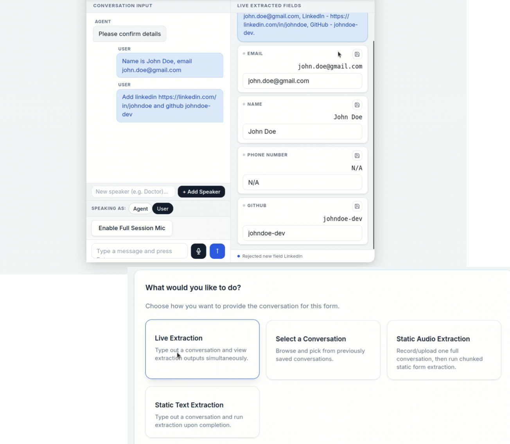
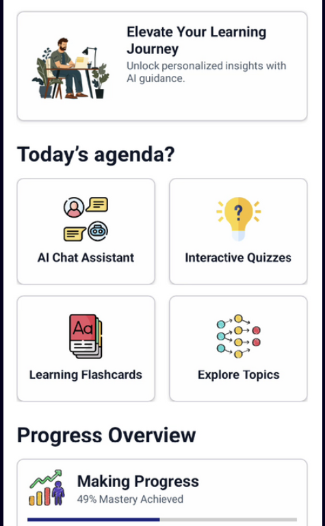
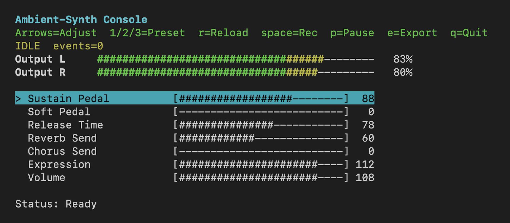
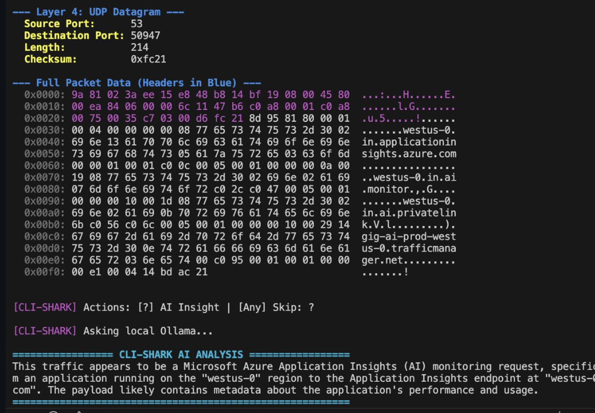

My Projects

ProductLabs AI Form Filler
Developed a real-time information extraction pipeline using Qwen-2.5-1.5B model to parse and populate structured form schemas directly from live text/audio chat inputs. Also implemented a multimodal media layer using Whisper ASR and PyAnnote acoustic embeddings to automate speaker diarization, keeping streaming chunk ingestion latency under 200 ms. Also designed a custom worker thread pool to manage concurrent live audio workflows, and model inferencing, reducing peak response latency by 65%.
AI-Powered Tutor
Built an offline personalized AI tutoring app on the Qualcomm Innovators Dev Kit, running LLaMA-3.2-3B fully on-device via QAIRT. Optimized NPU inference to scale throughput from around 3 to 26-30 tokens/s while cutting TTFT to 25 ms. Implemented Android-side PDF parsing and prompt orchestration for quizzes, flashcards, summaries, weak-topics review and key-topic extraction without internet.


Distributed File System
Developed a network file system in C with a central naming server and multiple storage servers supporting concurrent TCP clients. Replaced linear filename search with a Trie-based index to achieve O(L) lookups and improve resolution speed by 3-4x. Added sentence-level locks, replication, checkpoints, access control, and caching for reliability and scale.
Cricket Match
Timeline Generator
End-to-end CV and OCR pipeline that parses raw cricket videos into ball-by-ball text timelines. Trained two custom ResNet18 models to track bowler action and predict exact ball-release timestamps. Paired PaddleOCR with a custom state machine to read the broadcast scoreboard at those specific frames and infer missing data. Built an interactive CLI tool with smart caching to avoid running heavy GPU inferences twice.

AmbientSynth —
MIDI Piano Synth
Lightweight terminal-based piano synthesizer for MIDI keyboards. Dynamic audio backend selection across macOS, Linux, and Windows. Live controls for sustain, reverb, chorus, and expression. Built with FluidSynth and mido for seamless hardware integration.
CLI-Shark
Built a packet sniffer in C with libpcap to capture and analyze live traffic directly from network interfaces. Integrated kernel-level BPF filtering to reduce CPU load by around 60 percent. Designed a CLI that parses Ethernet, IP, and TCP/UDP headers and streams packet summaries in real time for debugging workflows. Also added optional AI insights (using Ollama LLaMA-3) for captured packets and RST Sniper to neutralize TCP Connections.
